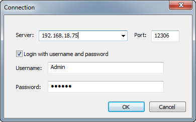

Rserve einrichten
Setup-R-Server
Rserve unterstützt beim Zugriff auf die R-Software auf einem Servercomputer, wenn es keine R-Software auf Clientseite gibt.
Konfiguration auf Serverseite
R- und Rserve-Paket installieren
- Laden Sie R von CRAN herunter. Beachten Sie, dass die Schritte unten auf R 3.2.0 basieren.
- Installieren und starten Sie R 3.2.0. Führen Sie das folgende Skript in der R-Konsole der R-Installation, um die Installation des Rserve-Pakets zu initiieren.
install.packages("Rserve")
- Wählen Sie im Popup-Dialog einen Download-Kanal und klicken Sie auf OK, um das Paket herunterzuladen. Nach dem Download wird das Paket automatisch ausgepackt und installiert.
Ein Konto erstellen
- Führen Sie das Skript aus in der R-Konsole aus, um den R-Bibliothekspfad zu erhalten, und öffnen Sie dann den Pfad.
.libPaths()[1] #output could be [1] "C:/Program Files/R/R-3.2.0/library"
- Geben Sie diesen Pfad in den Windows Explorer ein und suchen Sie den Unterordner Rserve/lib/x64/ in diesem Pfad. Erstellen Sie eine .txt-Datei mit dem Namen RserveAuth.txt und schreiben Sie dann den Benutzernamen und das Passwort in die Datei, zum Beispiel:
Admin 123456
- Erstellen Sie eine weitere Datei mit dem Namen Rserv.txt und schreiben Sie den Inhalt unten in die Datei:
pwdfile RserveAuth.txt
remote enable
auth required
plaintext enable
- Ändern Sie die Dateierweiterung von Rserv.txt in conf, so dass die Datei stattdessen als Rserv.conf gespeichert wird.
Systempfad hinzufügen
- Klicken Sie auf die Start-Schaltfläche von Windows und wählen Sie Systemsteuerung: System und Sicherheit: System. Wählen Sie auf der Startseite Erweiterte Systemeinstellungen, um den Dialog Systemeigenschaften zu öffnen.
- Klicken Sie auf die Schaltfläche Umgebungsvariablen... auf der Registerkarte Erweitert, suchen Sie die Variable Path in der Gruppe Systemvariablen und klicken Sie auf Bearbeiten, um den Dialog Systemvariable bearbeiten zu öffnen.
- Fügen Sie den Pfad, einschließlich R.dll-Datei, zB. C:\Program Files\R\R-3.2.0\bin\x64, in das Bearbeitungsfeld Wert der Variablen: ein. Klicken Sie dann auf die Schaltfläche OK, um den Dialog zu verlassen.
-
- Klicken Sie auf die Start-Schaltfläche von Windows und wählen Sie Alle Programme: Zubehör: Eingabeaufforderung, um das Fenster der Eingabeaufforderung zu öffnen. Geben Sie ein:
cd C:\Program Files\R\R-3.2.0\library\Rserve\libs\x64
Sie können den Pfad verlassen, wenn es nicht der Speicherort Ihrer Rserve.dll ist. Drücken Sie Enter, um zu dem Pfad zu gelangen. Sie müssen Ihren Computer vielleicht neu starten, um die Einstellungen anzuwenden, wenn Sie den folgenden Befehl ausführen.
- Geben Sie den Inhalt unten in das Befehlsfenster ein. Klicken Sie auf Enter.
Rserve.exe --RS-conf Rserv.conf --RS-port 12306
Die Meldung Rserve: Ok, ready to answer queries. wird ausgegeben.
- Starten Sie eine neue Instanz der Eingabeaufforderung und führen Sie Folgendes aus:
ipconfig
, um die Rserve PC IP, z.B: 192.168.18.75 zu erhalten.
Origin auf Clientseite konfigurieren
- Stellen Sie sicher, dass sich die Dateien ORserve9.dll und ORserve9_64.dll im Origin-Verzeichnis befinden, z.B., C:\Program Files\OriginLab\Origin2016. Versichern Sie sich außerdem, dass die PC-Firewall ausgeschaltet ist, um die Rserve-Verbindung nicht zu blockieren.
- Vergewissern Sie sich, dass das Fenster der Eingabeaufforderung, das unten gezeigt wird, offen bleibt.
-

- Starten Sie Origin 2016 und wählen Sie Konnektivität: Rserve-Konsole, um den Dialog Verbindung zu öffnen.
- Geben Sie die IP (die Sie von dem Rserve-PC erhalten, z.B.: 192.168.18.75) der Maschine, die Rserve.exe ausführt, im Bearbeitungsfeld Server ein. Der Port lautet 12306.
- Aktivieren Sie das Kontrollkästchen Login mit Benutzername und Passwort und geben Sie Benutzername und Passwort ein. In diesem Beispiel ist das Admin bzw. 123456, wie in RserveAuth.txt gespeichert.
-
- 
- Klicken Sie auf OK. Sie sehen, dass die RServe-Konsole gestartet wird:
-